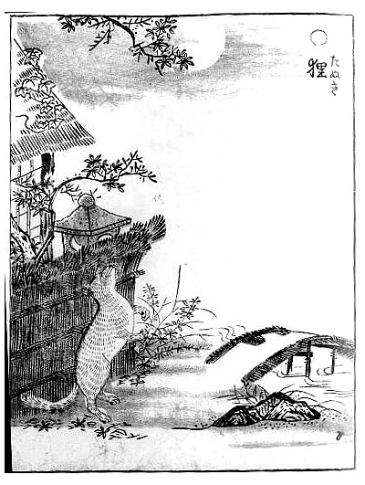

化狸
|  |
簡介「狸」這個字在傳入日本後，當時的人將狸這個字用來指稱貉、豹貓(石虎)、山豬、貛、鼬、鼯鼠等動物在日本的傳說當中，普通的貉在機緣下得到仙氣而變成妖精；牠們靠一塊樹葉便能百變無方，據說只有菜鳥才要頂葉子，修行深的狸不用樹葉也能千變萬化與催眠術，可謂極盡天馬行空之能事。 怪談在很久以前，有一對旅人在深山中看到一間房子，旅人跟房子敲門，裡面走出一位姑娘，姑娘便答應讓旅人住一晚，到第二天早上起來才發現。原來那位姑娘是狸變的，昨天吃的點心是葉子，房子只是幻覺。 |